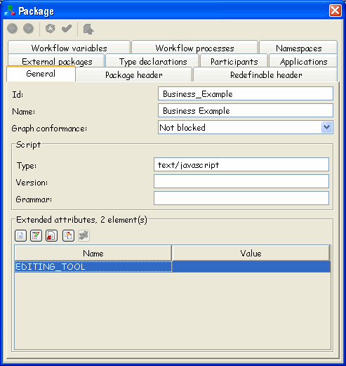
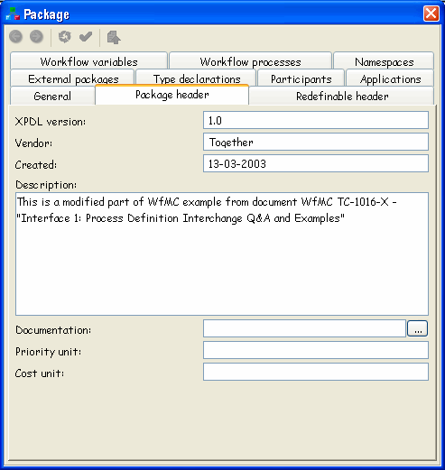
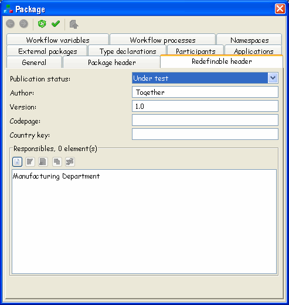
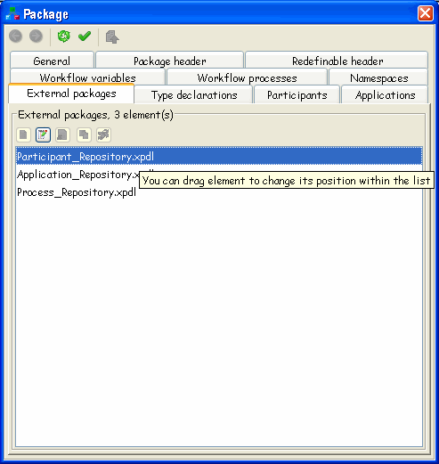
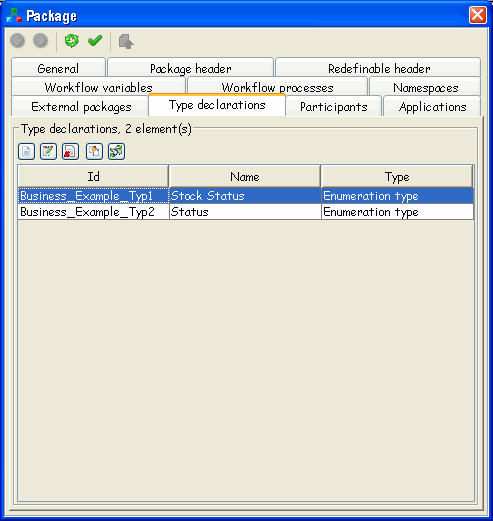
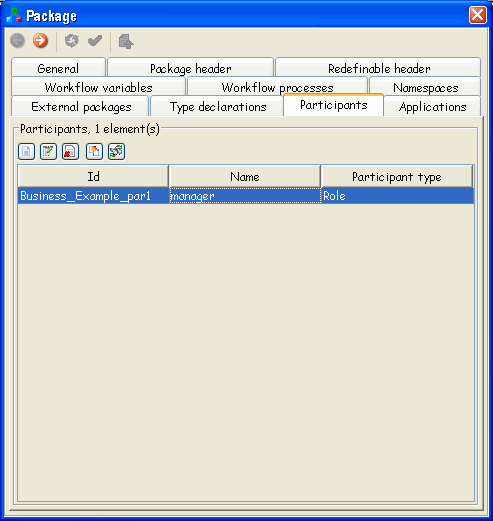
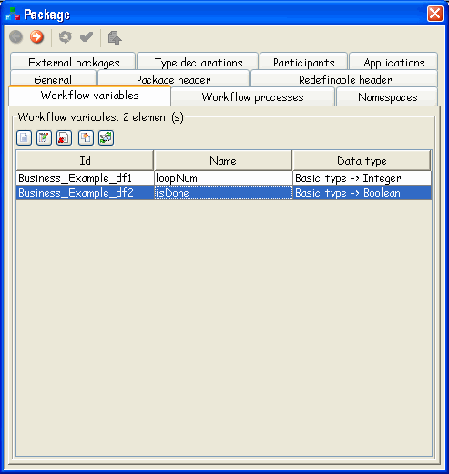
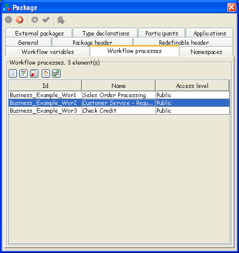
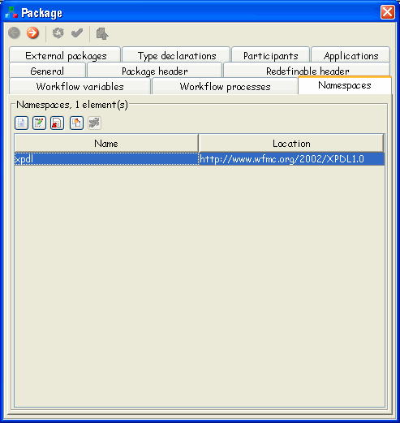

It is possible to define several processes within one package, which may share the same tools (applications) and participants. The Package acts as a container for grouping together a number of individual process definitions and associated entity data, which is applicable to all the contained process definitions. |  |
You can chose to create one package per workflow process, which should contain all the necessary workflow processes as well as all the associated tools (workflow applications) and workflow participants. Another approach is to define just parts of one process definition or common parts of several processes within one package (e.g. a workflow participant list or a workflow application list), and then to reference it from other packages. Within a package, the scope of the definitions of some entities is global and these entities can be referenced from all workflow process definitions contained within the package. Those entities are:
Workflow Process Definition,
Workflow Participant Specification,
Workflow Application Declaration and
Workflow Relevant Data
TWE provides a way to manage above listed entities (within one package). On the picture showing main toolbar organization, you can see where is the toolbar part for handling the properties of the selected Package.
To create a new Package in TWE, you simply select File->New, or
click appropriate button in the toolbar  (the first button on the left). If you are
currently editing some other XPDL file and there are some unsaved
changes there, prior to creating a new Package, TWE will ask you if you
want to save the changes.
(the first button on the left). If you are
currently editing some other XPDL file and there are some unsaved
changes there, prior to creating a new Package, TWE will ask you if you
want to save the changes.
It is important to say that actions represented by buttons shown on the toolbar picture (and also corresponding menu items) are applied to the currently selected package, which can be the main one or one of the externally referenced packages.
If you select the main package, you can modify its properties, but this is not possible for the external packages. These (external) packages are read-only, and you can only read their properties.
Table 4.1. General attributes
| Name | M/O | Description |
|---|---|---|
| Id | M (mandatory) | Used to identify the package. |
| Name | O (optional) | Name of the package. |
When you create a new Package in TWE, these attributes are getting a default value newpkg. It's up to user to change it to some meaningful values.
Table 4.2. Package Header
| Name | M/O | Description |
|---|---|---|
| XPDL Version | M | Version of XPDL. |
| Vendor | M | Defines the origin of this package definition and contains vendor's name, vendor's product name and product's release number. |
| Created | M | Creation date of workflow package. |
| Description | O | Short textual description of the workflow package. |
| Documentation | O | Operating System specific path- and filename of help file/description file. |
| Priority Unit | O | A text string with user defined semantics. |
| Cost Unit | O | Units used in Simulation Data (usually expressed in terms of a currency). |
The Package Header keeps all information central to a package. By default, when you create a new Package, XPDL version will be 1.0 (the version currently supported by TWE). If TWE reads a document that have XPDL version set to the value different then 1.0, it will report it as an error. When new package is created, Vendor attribute is set to Together and Created attribute to the current date and time of creation in ISO-8601 format.
Table 4.3. Redefinable Header
| Name | M/O | Description |
|---|---|---|
| Author | O | Name of the author of this package. |
| Version | O | Version of this package. |
| Code page | O | The code page used for the text parts. |
| Country key | O | Country code based on ISO 3166. It could be either the three digits country code number, or the two alpha characters country codes. |
| Responsible(s) | O | Workflow participants, that is responsible for this workflow package; the supervisors during run time (usually an Organisational Unit or a Human). It is assumed that the supervisors are responsible during run time. |
| Publication Status | O | Status of the Package. Possible values are:
|
The redefinable header covers those header attributes that may be defined at the package definition header and may be redefined in the header of any process definition.
If publication status is set to Released, by default TWE does not allow saving of such XPDL document if it contains any kind of errors or warnings (there is a configuration property AllowInvalidPackageSaving in togwecontroller.properties file, which you can change in order to always allow saving of document).
Table 4.4. Conformance Class
| Name | M/O | Description |
|---|---|---|
| Conformance Class | O | Describes the Conformance Class to which the
definitions in this package are restricted to. Possible values
are:
|
The conformance class declaration allows description of the conformance class to which the definitions in this package definition are restricted to. The specified class applies to all the contained process definitions. TWE supports all defined conformance classes. This means that when creating graphs (networks of activities and transitions) for a WorkflowProcess or ActivitySet, TWE will report as an error if graph conformance is not satisfied.
Table 4.5. Script element
| Name | M/O | Description |
|---|---|---|
| Type | M | Identifies the scripting language used in expressions. It is recommended that the Type will be selected from the following strings: text/javascript, text/vbscript, text/tcl, text/ecmascript, text/xml. This |
| Version | O | This is the version of the scripting language. |
| Grammar | O | This is a reference to a document that specifies the grammar of the language. It could be, for example, an XML schema, a DTD, or a BNF. |
The Script element identifies the scripting language used in XPDL expressions. In the runtime, workflow engine should consider the type specified, and interpret all expressions using appropriate scripting language interpreter. So, after specifying the scripting language type, make sure you are writing all the expressions (for transition conditions, actual parameters, deadline conditions, etc.) according to the language syntax.
In TWE, the icon  from package toolbar (or package menu) is used
for defining above mentioned properties, as well as all other package
properties and sub-elements, through appropriate property panels.
Also, you can get property panel for any Package element by selecting
it in Package tree component, and choosing Properties action from the
edit menu or toolbar.
from package toolbar (or package menu) is used
for defining above mentioned properties, as well as all other package
properties and sub-elements, through appropriate property panels.
Also, you can get property panel for any Package element by selecting
it in Package tree component, and choosing Properties action from the
edit menu or toolbar.
Package property panel contains a lot of different data about the main XPDL element - Package. Actually, you are able to access almost any XPDL element panel by navigating through the Package properties panel. All information are organized in several tabs: general, package header, redefinable header, external packages, type declarations, participants, applications, workflow variables, workflow processes and namespaces
All the tabs that will be mentioned can be also displayed as a separate property panels.
General tab - displays general package data
 Tab has tree parts. First part contains package's id, name and graph conformance. As already mentioned, TWE supports and validates XPDL depending on specified conformance level.
Second part contains information about script language: type, version and grammar.
Third part displays list of package's external attributes and offers toolbar with operations to handle extended attributes
Package header tab
Default value for field XPDL version is 1.0, and for field vendor is Together.
Field Created contains creation time and date, and field Description contains short package's description.
Documentation field binds external file with package. button opens a choose file dialog for finding appropriate one.
 Redefinable header tab
 Tab has two parts. First part contains the following fields: Publication status (can have one of the following values: under revision, under test, or released), Author (package's author), Version (version number for the package), Codepage and Country key.
As already mentioned, TWE lets you save your work despite the errors if you didn't set Publication status to Released. In the case you've set it to released, it won't be permitted to save your work until you correct all the errors. This behaviour can be configured in togwecontroller.properties file, by setting the value of property AllowInvalidPackageSaving to true.
Second part, called Responsibles, contains list of all responsibles for the package and operations for managing the list. Any participants known to this package can become the responsible.
When you press the button for defining new responsible, this action invokes a window with a combo box with a list of all possible participants you can chose.
Responsible person must be a participant that is already defined. When adding "Responsibles" for the whole package, participants defined inside that package or inside externally referenced packages can be added, and when adding "Responsibles" for a process, you can also add participants defined for this process.
Beside the combo box with a list of the responsibles, there is a shortcut button. If you press this button, the property panel for the participant selected in combo box will be shown.
External packages tab
It contains a list of all external packages for the package and toolbar buttons for managing the listed external package elements.
 Type declarations tab
 It contains information about all type declarations in a form of a table and operations for their managing. Every table row (type declaration) is described with id, name (optional value) and type. It contains toolbar buttons for managing the listed type declaration elements.
Participants tab
It contains information about all package's participants. Every table row (participant) is described with id, name (optional value) and participant type. It contains toolbar buttons for managing the listed participant elements.
 Applications tab

It contains information about all package's applications. Every table row (application) is described with id and name (optional value). It contains toolbar buttons for managing the listed application elements.
Workflow variables tab
It contains information about all package's workflow variables. Every table row (workflow variable) is described with id, name (optional value) and data type. It contains toolbar buttons for managing the listed workflow variable elements.
 Workflow processes tab
 It contains information about all package's workflow processes. Every table row (workflow process) is described with id, name (optional value) and Access level (optional value, can have one of the values: private or public). It contains toolbar buttons for managing the listed workflow process elements.
Namespaces tab
This property panel shows all namespaces defined within the XPDL document. User can add additional namespaces. Usually, additional namespaces are needed to insure document validity when user defines "complex" extended attributes. It contains information about all package's namespaces in a form of a table and operations for their managing. Every table row (namespace) is described with name and location. It contains toolbar buttons for managing the listed namespace elements.
